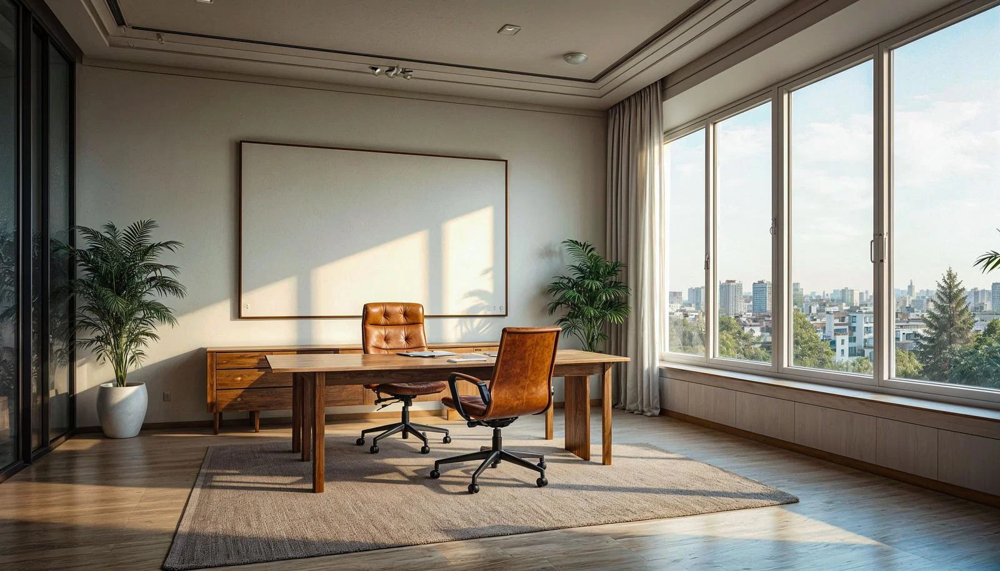

数字の話は、わかる言葉で。
名古屋・伏見の税理士法人です。毎月の試算表に、担当が「今月はこういうことです」と一枚の言葉を添えます。料金は目安を公開し、初回のご相談は無料です。
- 売上
- 4,820,000前月比 +6.1%
- 粗利
- 1,930,000粗利率 40.0%
- 現金残高
- 12,400,000前月比 −1,150,000
売上は増えましたが、現金は減っています。仕入れの支払いが前倒しになったためで、11月には戻ります。心配いりません。年末の賞与の分は、11月中に一度お話ししましょう。
「で、うちは大丈夫なんですか」に、答えられる事務所でありたい。
- 返事は、翌営業日までに。
メール・チャットでのご質問には、翌営業日までに返事をします。「忙しそうで聞けない」をなくすための、事務所の決まりです。
- 毎月、数字を一枚のことばに。
試算表のほかに、売上・粗利・現金の動きを一枚にまとめた月次レポートをお渡しし、30分の打ち合わせで説明します。
- 料金は、先に全部。
月額・決算・申告・年末調整。かかる料金は契約の前に一覧でお見せします。あとから増える項目は、事前に必ずご相談します。
できること
月次の顧問
記帳の確認、試算表、月次レポート、月1回の打ち合わせ。税務の相談はいつでも。
決算・申告
法人税・消費税の申告書の作成と提出。決算の2か月前から、納税額の見込みをお伝えします。
会社をつくる
設立の手続き、融資の申請書、最初の資金繰り表まで。創業2年目までは月額を抑えた料金です。
相続・事業承継
相続税の試算と申告。親から子へ会社を渡すときの株の評価と、何年かけて進めるかの計画。
月額の顧問料
年商と訪問の回数で決まります。すべて税込。決算料は月額の4か月分が目安です。
| 年商 | 訪問なし（オンライン） | 隔月訪問 | 毎月訪問 |
|---|---|---|---|
| 〜3,000万円 | 33,000円決算 132,000円 | 38,500円決算 154,000円 | |
| 〜1億円 | 44,000円決算 176,000円 | 49,500円決算 198,000円 | |
| 〜3億円 | 60,500円決算 242,000円 | 71,500円決算 286,000円 | |
| 3億円〜 | 個別にお見積もりします。 | ||
記帳をお任せいただく場合は、仕訳の数に応じて月額 11,000円から加算します。年末調整は1人あたり 2,200円、給与計算は月額 11,000円から。ここに書いていない料金が発生するときは、作業の前に必ずご相談します。
契約までに、だいたい3週間。
初回相談（無料）
いまの困りごとと、会社の数字をざっくり伺います。来所でもオンラインでも。
60分お見積もり
年商・仕訳の数・訪問の希望から、月額と決算料を一覧でお出しします。
3営業日以内いまの税理士からの引き継ぎ
過去の申告書と帳簿を受け取ります。前の事務所への連絡は、こちらから行います。
約2週間契約・はじまり
担当とサブ担当の2人を決めて、最初の月次からスタートします。
契約日から担当制。代理の人は来ません。

高橋 さやか代表社員・税理士
「数字が苦手」は、説明する側の問題だと思っています。
2004年税理士登録。製造業・建設業の顧問を中心に22年。2015年、あさひ会計を設立。
村田 圭社員・税理士
会社を始める人の、最初の数字を一緒につくるのが好きです。
2012年税理士登録。創業支援と融資に強く、年間40社の設立を担当。

- 名称
- 税理士法人あさひ会計
- 所在地
- 名古屋市中区栄 1-9-16 伏見ビル 6階（伏見駅 徒歩3分）
- 創業
- 1996年（法人化 2015年）
- 人数
- 税理士 6名、スタッフ 14名
- 営業時間
- 平日 9:00〜18:00
- 電話
- 052-123-4567
まずは、いまの数字を見せてください。
直近の決算書か試算表があれば、初回の60分で「いま何が起きているか」をお話しできます。なくても大丈夫です。